Sprites
Introduction
- Scratch is a visual block-based 编程 language originally developed by a team at MIT’s Media Lab and now maintained by its own Scratch Foundation.
- By putting together “puzzle pieces” in Scratch, we can create visual stories, animations, games, and other programs.
- We’ll learn and use 编程 concepts and ideas, like functions, loops, condition, and variables.
- Even though Scratch uses visual blocks as opposed to textual code, its programs are based on the same fundamental ideas and use same principles of computational thinking.
Interface basics
- We can go to Scratch’s website, click “Start Creating”, where we’ll see an interface like this:
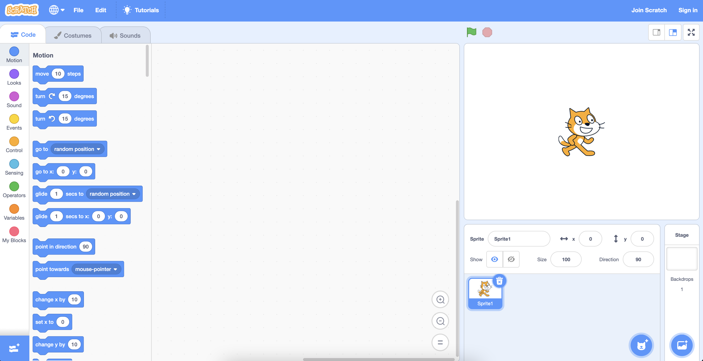
- On the left side, we have a library of blocks, where we can drag and drop any combination of them into the middle 小组课, called the block editor, where we’ll build our 项目.
- On the top right side, we have the stage, where our 项目 will run and be shown to others viewing or using it.
Sprites
Naming and positioning
- When we create a new 项目, we see the Scratch cat character, called a sprite, which is just an object that can appear on the stage.
- Below the stage, we see all the sprites in our 项目, and currently we only have the cat, called “Sprite1”.
- We can move our cat around the stage by just clicking and dragging it. Notice that the values for the position of the sprite changes as we move it around. For 示例, the x-value is 177 and the y-value is 42 when the sprite is moved towards the top right:
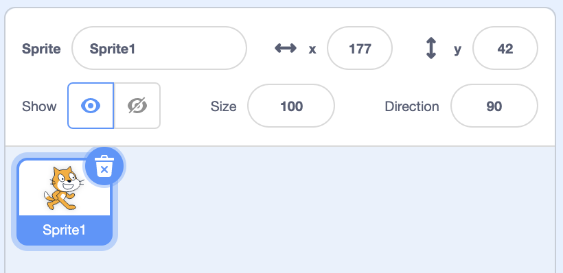
- It turns out that sprites are located on an x- and y-coordinate grid on the stage, where the x-value represents how far to the left or right our sprite is, and the y-value represents how far up or down on the stage it is.
- The perfect center of the stage is (0, 0), and positive x-values will move the sprite to the right, and negative x-values will move it to the left. Similarly, positive y-values will move the sprite up, and negative y-values will move it down.
- We can see the sprite’s current position as x- and y-values, but we can also control them with blocks in a little bit.
- We can also change the x- and y-values of our sprite directly by clicking on the values and typing in what we want. And we can click on the 姓名 of the sprite, and change it to something else as well. This will help us keep track of our sprites when we start adding 更多 of them to our 项目.
- We can also show or hide each sprite with the toggle labeled “Show”, and change the size (in percent), or direction, which rotates the cat to face some number of degrees:
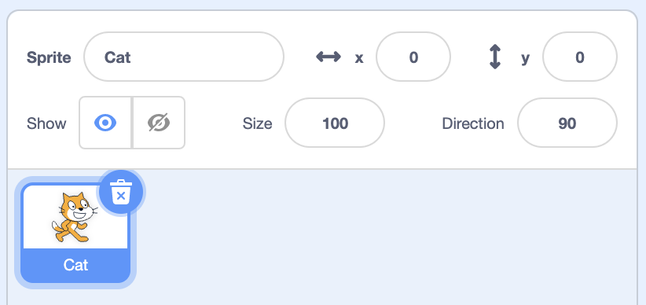
- When we click on the value for “Direction”, we’ll see a little dial that we can turn, which will also turn our sprite on the stage.
Adding Sprites
- Let’s add a new sprite. We can click the button with a little plus in the bottom of the sprite area, and see some options for adding a new sprite:
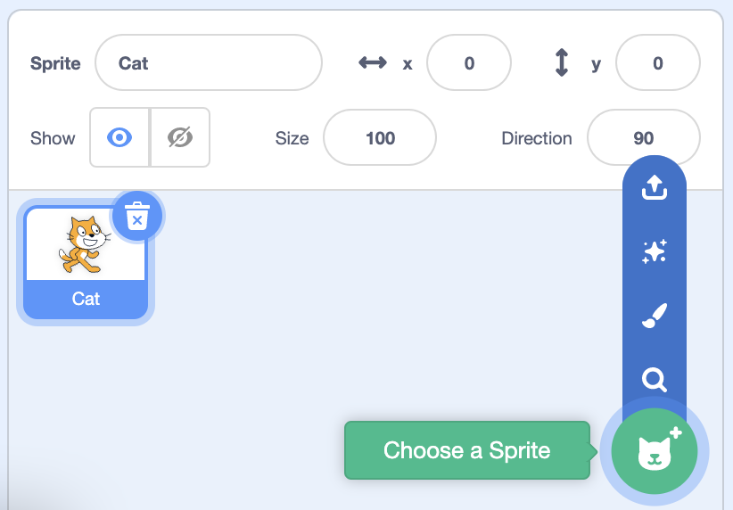
- For now, we’ll use the main “Choose a Sprite” button, and we’ll see a big list of sprites that come with Scratch that we can use. We can click on the categories or use the 搜索 box to find something in particular.
- We’ll click on the Fish, and we’ll see that both sprites are now on our stage. We can move them around so they’re not overlapping.
- We also have both sprites in the bottom area, and the one highlighted in blue is the one that’s selected and the one that we’re working with. We can click on each of them to change the position or size of them, for 示例.
- We can right-click (or hold the control key and click) our fish, and see a 菜单 with some options. We can click “duplicate”, and now we’ll have two fish on our stage:
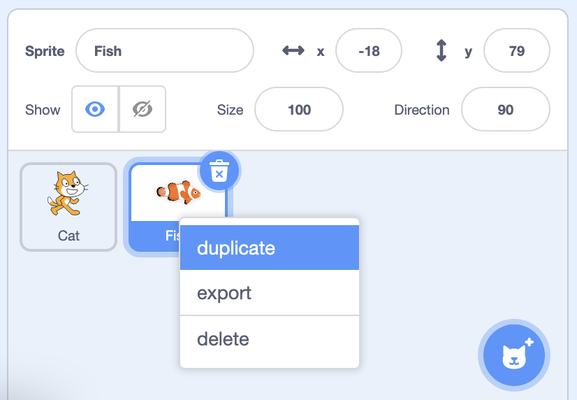
- Then, we can move them around so they’re not overlapping:
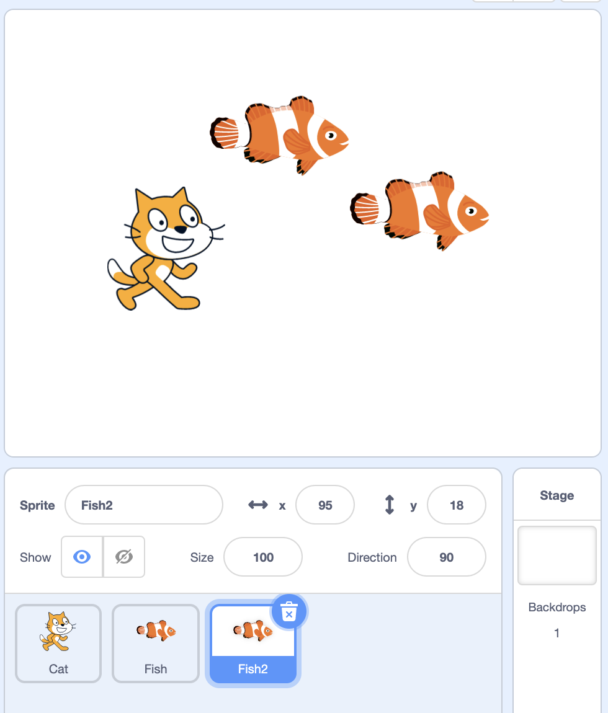
- Then, we can move them around so they’re not overlapping:
- We can see this 示例 at Sprites.
Costumes
- Each sprite has a costume, which is just the image of what the sprite looks like.
- On the top left, we can use the “Costumes” tab:
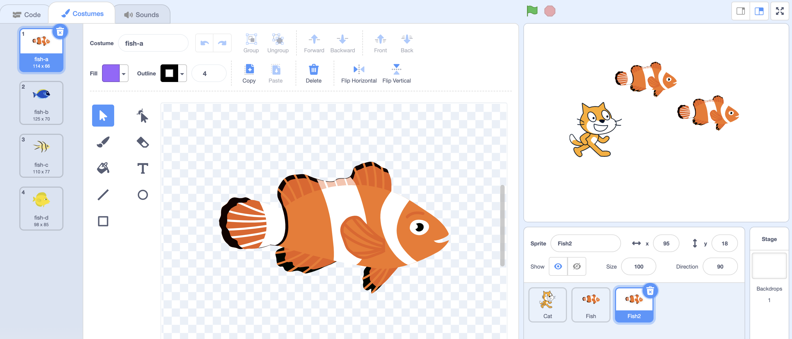
- We’ll see that our fish has four costumes, “fish-a”, “fish-b”, “fish-c”, and “fish-d”, and we can select different ones by clicking on them.
- For the cat, we have two different costumes, where its legs are in different positions. By switching between them, we can give the appearance that it’s walking.
- In the costume editor, we can even add new costumes with the button on the bottom left, with the plus sign. We can add costumes from Scratch, or paint our own with the 工具 in the center.
- We can also edit the built-in costumes by selecting them, and using the 工具 to change them to how we want them to look.
- We can see this 示例 at Costumes.
- Finally, we can upload our own photo or image from our computer to use as a costume.
Sounds
- We can use the “Sounds” tab on top to give sounds to sprites:
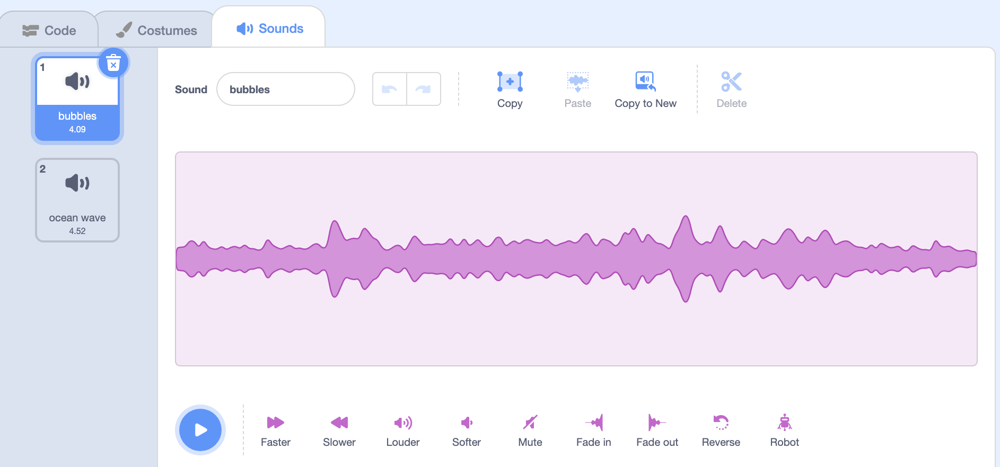
- We see that our fish has a “bubbles” sound and an “ocean wave” sound, and if we select our cat in the sprite panel, we see that it has just one sound, a “meow” sound.
- We can change the built-in sounds, or record or upload our own.
Backgrounds
- Our stage has a plain white 背景, so we can click the button in the bottom right to choose a new backdrop:
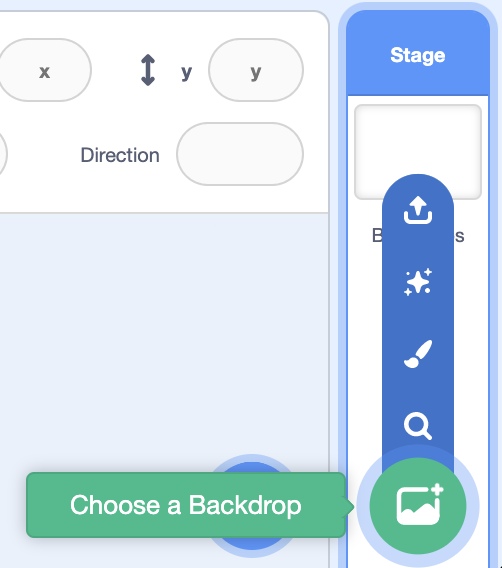
- Now we’ll see a lot of different backdrops, and we’ll use the underwater one for our fish.
- But our cat is out of place now, so we can click on it in our sprite panel and use the trash can icon to remove it.
- We can flip our yellow and green fish by changing the rotation to negative 90 degrees, but this turns our fish upside-down. It turns out that we can change the rotation style from all-around (the circle on the left) to left-and-right (the triangles in the center):
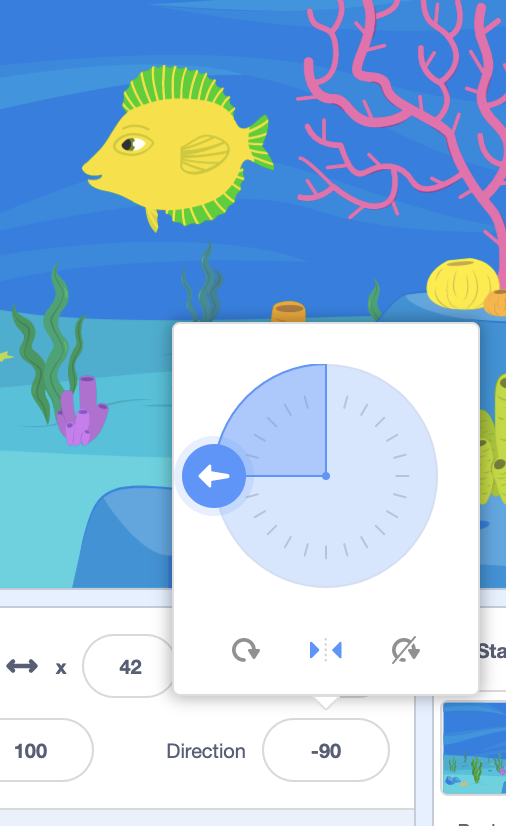
- Now our sprite will face only to the left or right.
- On the top right, we can click the full-screen icon to see our stage and sprites in full-screen as well.
- We can see this 示例 at Backdrops.
Saving
- To save our 项目 so we can keep it and use it later, we can use the File 菜单 on the top left to save it:
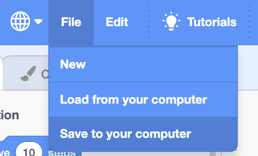
- After we save our 项目, we can load it later by using the “Load from your computer” option in the same mennu.
- We can also create an account with Scratch with the “Join Scratch” button on the top right, which will save our 项目 to Scratch’s website. This will also let us easily share our 项目 with others.
下一页 时间
- 下一页 时间, we’ll start using these code blocks to program our sprites to do different actions, and even create interactive stories and games based on a person’s input.